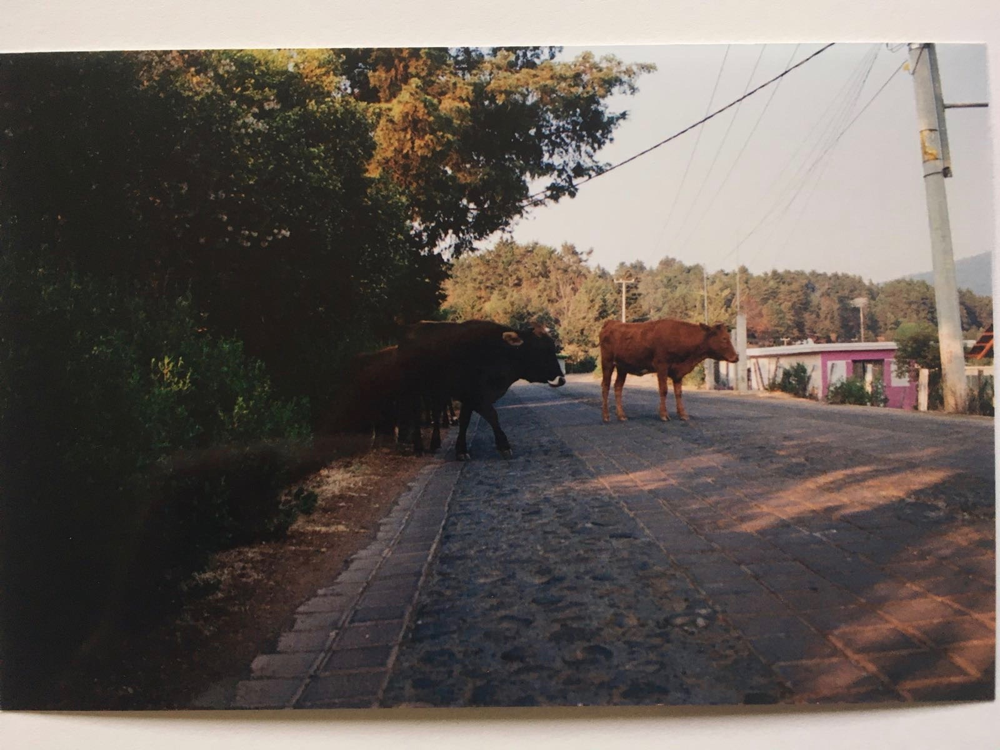
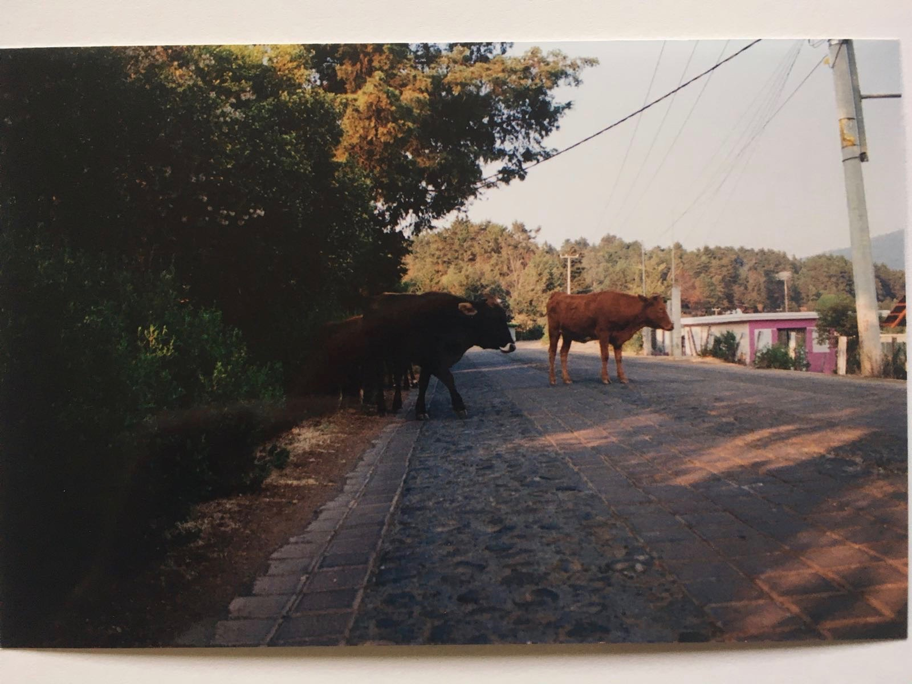

▼Creative Writing & Translations
▼ Exhibitions & Film
About
Jorge Alejandro Rodríguez Solórzano is a writer and researcher from Guadalajara, Jalisco. His work investigates displacement, migration and diaspora, as well as their generative and political dimensions, through auto-fictive writing and collaborative, multi-media work. Jorge’s creative writing and literary translations have been published or are forthcoming in Oral.Pub, rivulet press, Khabar Keslan, Lifta Volumes: Futures of Palestine, and Angelaki Journal for the the Theoretical Humanities. His recent film and curatorial work has been shown or is forthcoming at the London International Migration Film Festival and the Los Angeles Contemporary Archive. Jorge has been a fellow at the London in Motion Documentary Workshop and at the Los Angeles Review of Books/ University of Southern California Publishing Workshop. He holds an MA degree with distinction in Migration and Diaspora Studies from SOAS, University of London, and a BA in French Literature and Language from Reed College. He resides in the ever-expanding Mexico-U.S. border.
Rio Grande, 2016 and 2019.
Reeds in Los Tres Laredos Park get cleared.
Stills from Here to Stay, 2019. Altab Ali Park, Whitechapel, London.
Cow Traffic. Lago de Zirahuén, Michoacán. 2017.

 

.